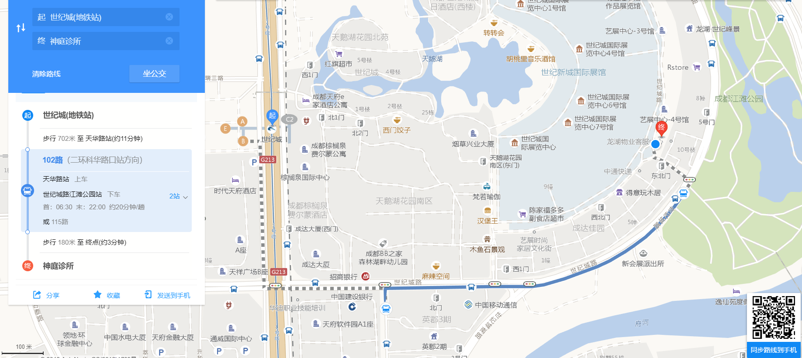
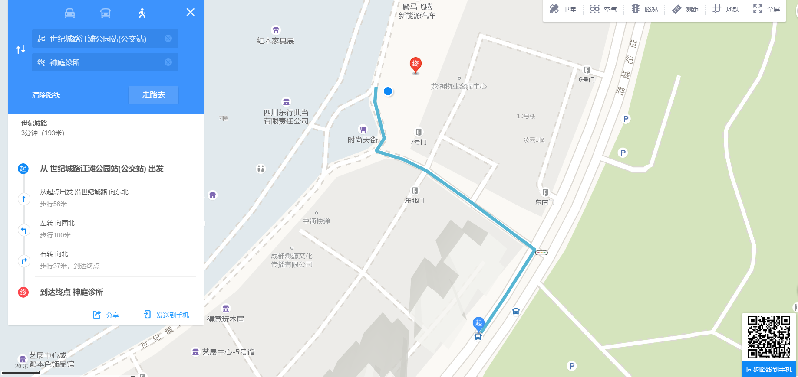

神庭科技为一家致力于发扬推广民族精粹中医为核心的互联网科技公司，利用大数据以及互联网的方便性为依托，结合线下神庭医馆开展中医问诊服务，利用计算机智能算法实现并给出治疗方案，以攻克各种尖端疑难危急重症为己任。
公司研发的基于互联网+大数据的智能化中医生“神庭君”已经于2017年9月成功上线并顺利运行，用户在手机端录入病情，可瞬间得到中医治疗方案，结合线下合作中医馆的服务，可快速下单让中药快递到家。目前神庭君的用户已遍布全国并延伸至海外。经过长时间的运行测试验证，结合临床实践的数据分析显示，神庭君体现出了极高的医疗水准，成功救治了大量包括各种晚期癌症在内的疑难重症患者，并将为未来智能化AI医疗的发展和改善整个就医环境做出贡献。
公司将进一步优化计算技术的智能化发展，积极推进线下连锁医馆的建设，在极大提高大众就医质量的同时，大幅度降低医疗费用，从而实现更为快捷、方便、安全、高效的医疗服务。
地址：成都市高新区世纪城路198号时尚天堂街206-1-15。
地铁：
乘坐1号线到世纪城站从B口出，沿天府大道中段往南走，第一个十字路口往左拐至世纪城路，在世纪城路与天华路交界处找到天华路站公交车站，乘坐102或115路公交车（往二环科华路口站方向）至世纪城路江滩公园站下车，穿过红路灯直行过东2门右转即可。

公交：
乘坐102或者115路公交车至世纪城路江滩公园站下车，然后在红路灯处拐至世纪城东门2号再右转即可。

自驾：
可自行用高德或者腾讯地图搜索神庭诊所进行导航，医馆外可以停车。

神庭君下载二维码